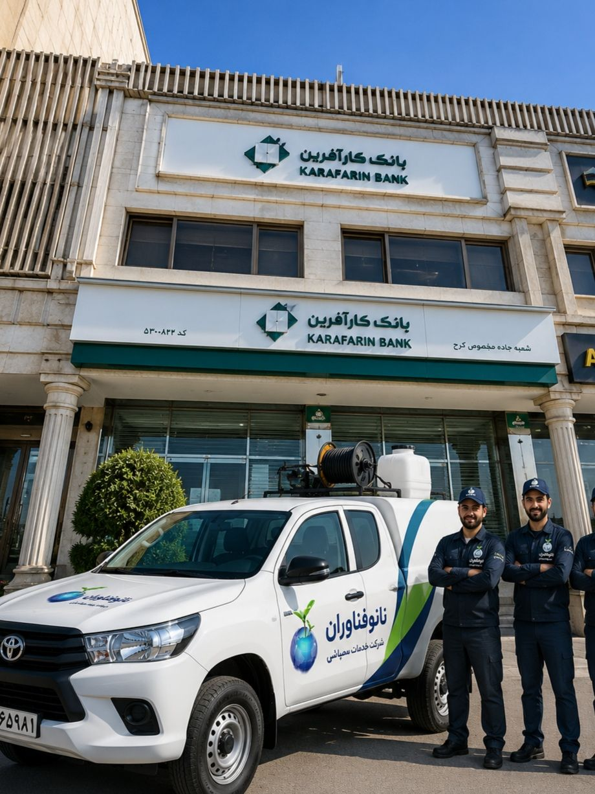

ادارات، دفاتر و سازمانها به عنوان محیطهای کاری روزانه، نقش حیاتی در اقتصاد و توسعه هر جامعهای دارند. میلیونها نفر ساعتهای طولانی از روز را در این فضاها سپری میکنند و انتظار دارند محیطی امن، بهداشتی و عاری از هرگونه آفات داشته باشند. اما متأسفانه، محیطهای اداری به دلیل ویژگیهای خاص خود مانند حضور مواد غذایی (آشپزخانهها و بوفهها)، وجود فضای سبز، سیستمهای تهویه گسترده، انبارها و تردد بالای افراد، یکی از مستعدترین مکانها برای رشد و تکثیر انواع آفات محسوب میشوند.
وجود آفات در ادارات نهتنها تهدیدی جدی برای سلامت کارکنان است، بلکه میتواند به بهرهوری و اعتبار سازمان لطمههای جبرانناپذیری وارد کند. تصور کنید یک کارمند در حین کار، یک سوسک یا موش را در محیط کار مشاهده کند. این صحنه نهتنها تمرکز او را برهم میزند، بلکه میتواند باعث ایجاد ترس و اضطراب در میان کارکنان شود و به سرعت در کل سازمان منتشر گردد و روحیه تیمی را تحت تأثیر قرار دهد.
در این مقاله جامع از شرکت سمپاشی نانوفناوران بهداشت تهران، به بررسی کامل چالشهای کنترل آفات در محیطهای اداری، مهمترین آفات، روشهای تخصصی سمپاشی و نکات کلیدی برای حفظ بهداشت و بهرهوری در ادارات و سازمانها میپردازیم.
کارکنان اداری ساعات طولانی را در محیط کار سپری میکنند و به طور مستقیم با سطوح، تجهیزات و فضاهای مشترک در تماس هستند. آفات مانند سوسکها، موشها و مگسها ناقل باکتریها و ویروسهای خطرناکی مانند سالمونلا، ایکولی و هپاتیت هستند که از طریق تماس مستقیم یا آلودگی سطوح و مواد غذایی قابل انتقال میباشند. این بیماریها میتوانند منجر به افزایش غیبتهای شغلی و کاهش بهرهوری شوند.
یک محیط کاری پاکیزه و عاری از آفات، تأثیر مستقیمی بر روحیه و رضایت کارکنان دارد. تحقیقات نشان داده است که محیطهای کاری بهداشتی و بدون استرس ناشی از وجود حشرات، باعث افزایش تمرکز، خلاقیت و بهرهوری کارکنان میشود. همچنین مشاهده هرگونه آفت در محیط کار میتواند به سرعت در میان کارکنان پخش شود و باعث ایجاد جو منفی شود.
آفات میتوانند خسارتهای مالی سنگینی به ادارات وارد کنند. موشها با جویدن سیمهای برق، کابلهای شبکه و تجهیزات الکترونیکی، خطر آتشسوزی و اختلال در سیستمهای IT را افزایش میدهند. همچنین جوندگان با تخریب مدارک، اسناد و بایگانیها، خسارتهای جبرانناپذیری به سازمانها وارد میکنند.
ادارات و سازمانها موظف به رعایت استانداردهای سختگیرانه بهداشتی هستند. سازمانهای نظارتی مانند وزارت بهداشت و اداره کار به طور دورهای از این اماکن بازدید میکنند و در صورت مشاهده هرگونه آلودگی، ممکن است سازمان را جریمه کرده و در موارد شدید، بخشهایی از آن را تعطیل کنند.
سوسکها یکی از رایجترین و خطرناکترین آفات در محیطهای اداری هستند. آنها ناقل باکتریهای بیماریزا هستند و میتوانند مواد غذایی و سطوح را آلوده کنند. سوسک آلمانی در محیطهای گرم و مرطوب مانند آشپزخانهها، بوفهها و آبدارخانهها زندگی میکند و سوسک آمریکایی از طریق لولههای فاضلاب وارد ساختمان میشود و معمولاً در زیرزمینها و تاسیسات یافت میشود.
موشها در ادارات، علاوه بر انتشار بیماریها، تجهیزات الکترونیکی، کابلهای برق و اسناد و مدارک را تخریب میکنند. آنها در انبارها، اتاقهای بایگانی، سقفهای کاذب و فضاهای پشتی لانهسازی میکنند. جوندگان میتوانند از طریق دربهای ورودی، شکافهای دیوار و کانالهای تأسیساتی وارد ساختمان شوند.
مورچهها به دلیل جستجوی غذا، به راحتی وارد آبدارخانهها، آشپزخانهها و انبارهای مواد غذایی میشوند و میتوانند مواد غذایی و سطوح را آلوده کنند. در ادارات بزرگ، مورچهها میتوانند به سرعت بین طبقات و بخشها پخش شوند.
مگسها به ویژه در آشپزخانهها، آبدارخانهها و نزدیکی سطلهای زباله تجمع میکنند و ناقل بسیاری از بیماریهای گوارشی هستند. وجود مگس در محیط کار، ظاهر ناخوشایندی ایجاد میکند و میتواند باعث نارضایتی کارکنان شود.
عنکبوتها در گوشههای تاریک، سقفهای کاذب و انبارها تار میبافند و ظاهر ناخوشایندی ایجاد میکنند. وجود تارهای عنکبوت در محیط کار، نشانه عدم رسیدگی به نظافت محیط است و میتواند باعث ایجاد ترس در برخی کارکنان شود.
در اداراتی که دارای سازههای چوبی، مبلمان چوبی یا کاغذ و اسناد زیاد هستند، موریانهها میتوانند خسارتهای جبرانناپذیری به ساختمان و تجهیزات وارد کنند.
ادارات معمولاً در تمام روزهای کاری فعال هستند و نمیتوانند برای سمپاشی تعطیل شوند. بنابراین سمپاشی باید در ساعات کمترافیک (پس از ساعات کاری، در تعطیلات آخر هفته یا روزهای تعطیل رسمی) و با کمترین مزاحمت برای کارکنان انجام شود.
ادارات دارای فضاهای متنوعی مانند اتاقهای مدیریت، بخشهای اداری، اتاق جلسات، آبدارخانه، آشپزخانه، انبار، اتاق بایگانی، سرورخانه، سرویسهای بهداشتی و فضاهای عمومی هستند که هر کدام نیاز به روشهای کنترل خاص خود دارند.
در ادارات، تجهیزات حساس الکترونیکی مانند سرورها، کامپیوترها، تجهیزات شبکه و دستگاههای چاپ وجود دارند که نیاز به مراقبت ویژه در حین سمپاشی دارند. سموم نباید با این تجهیزات تماس پیدا کنند.
سمپاشی در ادارات باید با نهایت دقت و رعایت کامل نکات ایمنی انجام شود تا هیچگونه تأثیر منفی بر فعالیتهای روزمره سازمان نداشته باشد و اعتبار مجموعه حفظ شود.
در ادارات، سقفهای کاذب، کانالهای تأسیساتی، پشت کابینتها و انبارها، نقاطی هستند که معمولاً به سختی قابل دسترس هستند و میتوانند محل مناسبی برای زندگی و تکثیر آفات باشند.
کارشناسان ما با بررسی کامل اداره یا سازمان، نقاط حساس، نوع آفات، میزان آلودگی و مسیرهای ورود را شناسایی میکنند. این بازرسی شامل موارد زیر است:
بر اساس نتایج بازرسی، یک برنامه جامع برای سمپاشی اداره تدوین میشود که شامل:
در ادارات، انتخاب سموم و روشهای سمپاشی با نهایت دقت انجام میشود:
عملیات سمپاشی با استفاده از تجهیزات پیشرفته و سموم استاندارد انجام میشود:
پس از سمپاشی، محیط به مدت مناسب (حداقل ۴ تا ۶ ساعت) تهویه میشود و کارشناسان زمان بازگشت ایمن کارکنان را اعلام میکنند.
پس از اتمام عملیات، کارشناسان ما بازدید مجدد انجام میدهند تا از موفقیت سمپاشی اطمینان حاصل کنند و در صورت نیاز، اقدامات تکمیلی انجام دهند.
کارکنان ادارات باید علائم حضور آفات را بشناسند، روشهای گزارشدهی سریع را بدانند و نکات بهداشتی را رعایت کنند.
مدیران سازمانها مسئولیت اصلی تأمین بهداشت و ایمنی محیط کار را بر عهده دارند. آنها باید:
کارکنان نیز نقش مهمی در پیشگیری از ورود و گسترش آفات دارند. آنها باید:
هزینه سمپاشی اداره به عوامل زیر بستگی دارد. برای دریافت مشاوره رایگان و استعلام دقیق هزینه، با کارشناسان ما تماس بگیرید:
| عامل | تأثیر بر هزینه |
|---|---|
| مساحت اداره | هرچه متراژ بزرگتر باشد، هزینه بیشتر است |
| تعداد طبقات و بخشها | بخشهای بیشتر نیاز به عملیات گستردهتری دارند |
| شدت آلودگی | آلودگی شدید نیاز به عملیات بیشتر و زمانبرتری دارد |
| نوع آفات | برخی آفات نیاز به روشهای خاص و هزینه بیشتری دارند |
| نوع روش سمپاشی | طعمهگذاری، مهپاشی یا ترکیبی |
توصیه میشود ادارات حداقل سالی دو تا چهار بار (هر فصل یا هر شش ماه) سمپاشی شوند. ادارات دارای آشپزخانه و بوفه ممکن است نیاز به سمپاشی ماهانه داشته باشند.
خیر، سموم استفادهشده توسط شرکت نانوفناوران با رعایت کامل استانداردهای بهداشتی انتخاب میشوند و برای انسان بیخطر هستند. در هنگام سمپاشی، بخشهای هدف ایزوله میشوند و پس از تهویه کامل، محیط برای حضور کارکنان ایمن میگردد.
بسته به نوع سموم استفادهشده، معمولاً ۴ تا ۶ ساعت پس از سمپاشی، محیط برای حضور افراد ایمن است. کارشناسان ما زمان دقیق را به شما اعلام میکنند.
سمپاشی اداره معمولاً پس از ساعات کاری یا در تعطیلات آخر هفته انجام میشود تا کمترین مزاحمت برای فعالیتهای روزمره سازمان ایجاد شود.
مدیریت سازمان مسئولیت کلی کنترل آفات را بر عهده دارد، اما هر کارکن نیز مسئول حفظ بهداشت و پیشگیری از ورود آفات در فضای کاری خود است.
ادارات، دفاتر و سازمانها به عنوان محیطهای کاری روزانه، نیازمند بالاترین سطح بهداشت و ایمنی هستند. کنترل آفات در این محیطها، با پیشگیری از بیماریها، افزایش رضایت و بهرهوری کارکنان و حفظ اعتبار سازمان، به بهبود کیفیت محیط کار کمک میکند.
شرکت سمپاشی نانوفناوران بهداشت تهران با بیش از یک دهه تجربه در زمینه سمپاشی ادارات، سازمانها و دفاتر کار، آماده ارائه خدمات تخصصی و تضمینی به شماست. تیم کارشناسان ما با شناسایی دقیق نوع آفات، استفاده از سموم استاندارد و ایمن، و رعایت کامل نکات ایمنی، محیطی امن، بهداشتی و عاری از آفات را برای سازمان شما به ارمغان میآورند.
🚀 همین حالا اقدام کنید:
📞 تماس فوری: ۰۹۱۲۰۷۰۵۷۴۶
💬 درخواست مشاوره رایگان: از طریق واتساپ یا ایتا
🔗 مشاهده سایر خدمات: کنترل آفات مسکونی